◾︎武器調整
◾︎AR
ハボック（ケアパケ）

- ・ダメージが18→21に増加
- ・ヘッドショットダメージ: 27
- ・ビームショットのダメージを53から70に増加
- ・ビームショットのヘッドショットダメージ: 105
ヘムロック
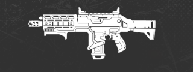
- ・ダメージを19から20に増加
- ・ヘッドショットダメージ: 26
ネメシス
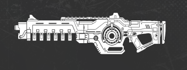
- ・ダメージが16から17に増加
- ・ヘッドショットダメージ: 22
R-301
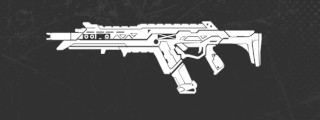
- ・ダメージを13から14に増加
- ・ヘッドショットダメージ: 18
フラットライン
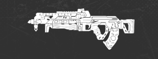
- ・ダメージを18から19に増加
- ・ヘッドショットダメージ: 25
◾︎LMG
ディボーション

- ・ダメージが15から16に増加
- ・ヘッドショットダメージ: 20
Lスター
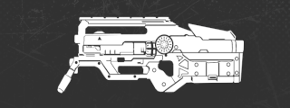
- ・ダメージを18から20に増加
- ・ヘッドショットダメージ: 25
スピファ
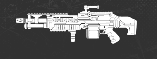
- ・ダメージを19から21に増加
- ・ヘッドショットダメージ: 26
ランページ
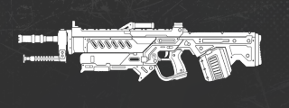
- ・ダメージを26から30に増加
- ・ヘッドショットダメージ: 38
- ・チャージアップ状態の経時的な減衰率を減少
◾︎マークスマン
30-30リピーター
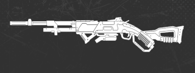
- ・ダメージを39から43に増加
- ・チャージなしのヘッドショットダメージ: 69
- ・フルチャージ時のダメージを53から58に増加
- ・フルチャージ時のヘッドショットダメージ: 93
- ・遠距離射撃時の弾のサイズをわずかに上昇
ボセック（ケアパケ）
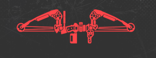
- ・ダメージを70から75に増加
- ・ヘッドショットダメージ: 120
- ・連射速度がわずかに低下
- ・「デッドアイズテンポ」を削除
- ・シャッターキャップ1ペレットあたりのダメージを12から13に増加
G7スカウト
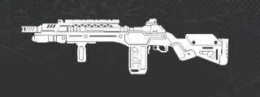
- ・ダメージを33から35に増加
- ・ヘッドショットダメージ: 56
- ・連射速度がわずかに低下
- ・遠距離射撃時の弾のサイズをわずかに上昇
トリプルテイク

- ・1ペレットあたりのダメージを21から22に増加
- ・ヘッドショットダメージ: 105(全弾)
- ・遠距離射撃時の弾のサイズをわずかに上昇
◾︎ピストル
P2020

- ・ダメージを21から24に増加
- ・ヘッドショットダメージ: 30
RE-45
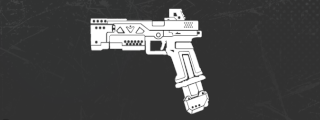
- ・ダメージを13から14に増加
- ・ヘッドショットダメージ: 18
ウイングマン
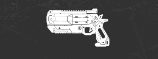
- ・ダメージが45から48に増加
- ・ヘッドショットダメージ: 72
- ・マガジンの基本サイズを6から5に縮小
- ・マガジン装着時
→ ホワイト: 6 青: 7 紫/金: 8
◾︎SMG
オルタネーター
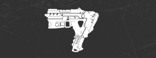
- ・ダメージを16から18に増加
- ・ヘッドショットダメージ: 22
CAR
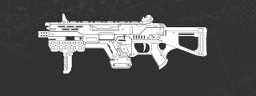
- ・ダメージを13から14に増加
- ・ヘッドショットダメージ: 17
- ・「レーザーサイト」を追加
プラウラー
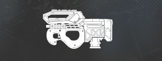
- ・ダメージが15から16に増加
- ・ヘッドショットダメージ: 19
R-99
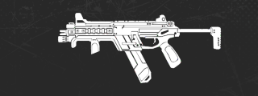
- ・ダメージが14から13に減少
- ・ヘッドショットダメージ: 16
- ・ダメージ減衰を削除
- ・エイム時の平行移動速度を他のSMGと同等に変更
- ・装備時の移動ペナルティ解除を削除
- ・反動を増加
ボルト
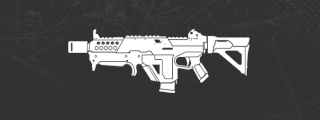
- ・ダメージが15から16に増加
- ・ヘッドショットダメージ: 19
◾︎SG
EVA-8
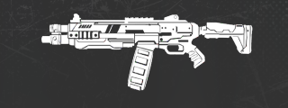
- ・1ペレットあたりのダメージを7から8に増加
- ・増加ヘッドショットダメージを削除
マスティフ
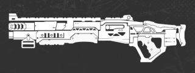
- ・1ペレットあたりのダメージを14から16に増加
- ・増加ヘッドショットダメージを削除
モザンビーク
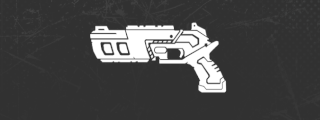
- ・1ペレットあたりのダメージを15から16に増加
- ・ヘッドショットダメージ: 60(全ペレット)
ピースキーパー（ケアパケ）
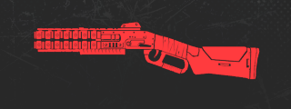
- ・1ペレットあたりのダメージを9から12に増加
- ・ヘッドショットダメージ: 135(全ペレット)
- ・チョーク速度が大幅に増加
- ・完全にチョークされたブラストパターンが大幅にタイトに
- ・ペレットは敵を貫通し、最初のターゲット以降の各ターゲットに50%のダメージを与える
◾︎SR
チャージライフル

- ・基本ダメージに変更なし
- ・ヘッドショットダメージ(最小距離): 135
- ・ヘッドショットダメージ(最大距離): 198
- ・自動射撃ヘッドショットダメージ(最小距離): 101
- ・自動射撃ヘッドショットダメージ(最大距離): 149
- ・手足へのダメージを90%から70%に減少
クレーバー（ケアパケ）
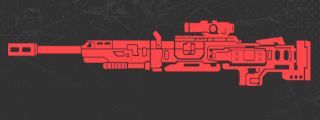
- ・ダメージを140から150に増加
- ・ヘッドショットダメージ: 210
ロングボウ

- ・基本ダメージに変更なし
- ・ヘッドショットダメージ: 108
- ・手足へのダメージを80%から70%に減少
センチネル

- ・基本ダメージに変更なし
- ・ヘッドショットダメージ: 126
- ・手足へのダメージを90%から70%に減少
- ・パッシブ「デッドアイズテンポ」を削除